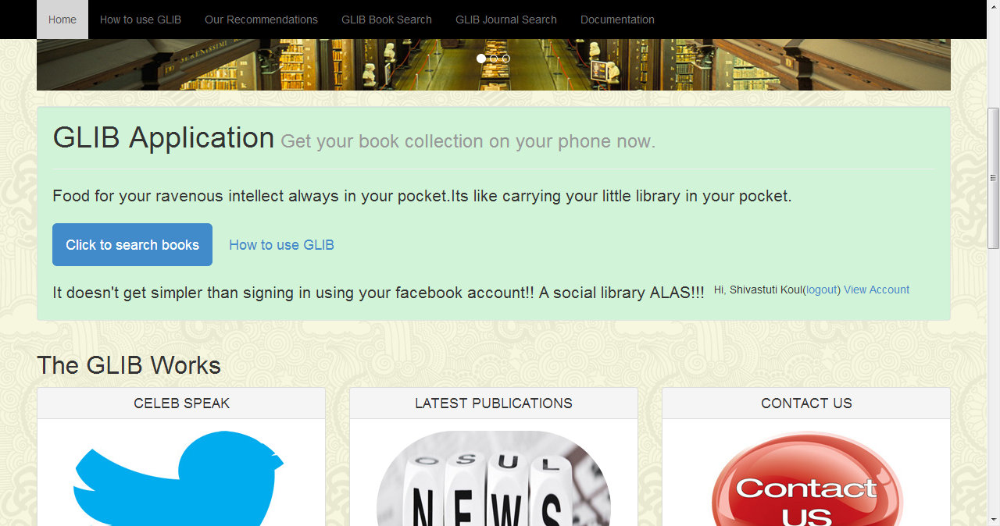
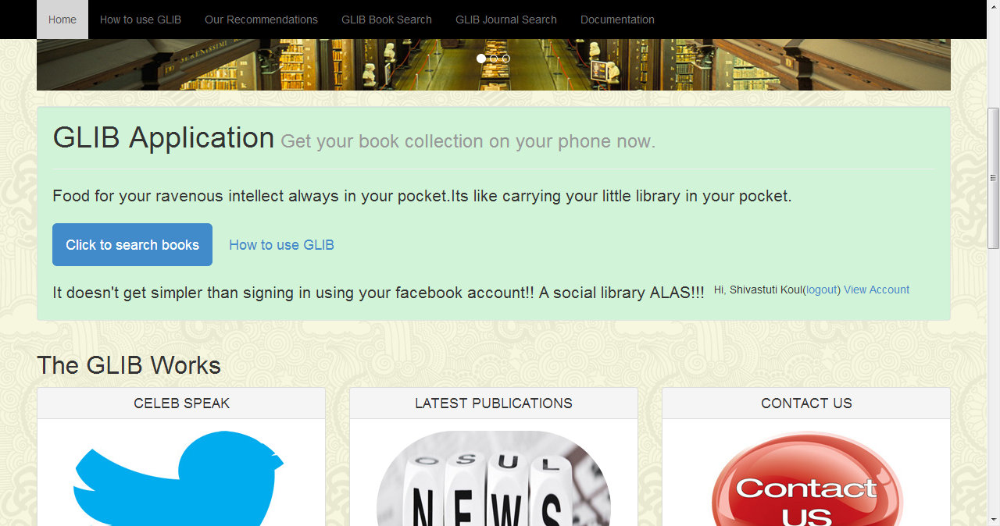

Login Using Facebook
At various pages on the website, the user has access to the login link where he/she can make use of his/her already existant facebook credentials (or create those if need be) to log into the user profile /account.
The login feature enables the user to view his account where his details and a few utilities like posting comments and viewing other user activity are visible.

